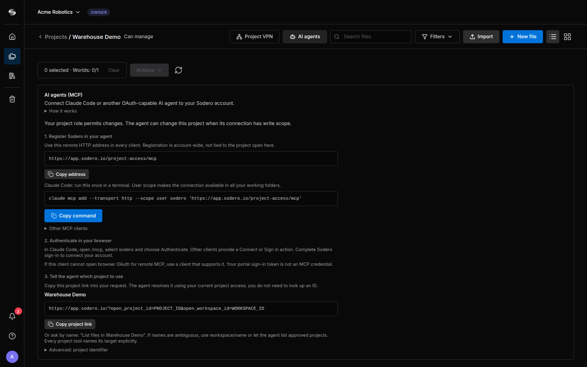

AI Agents¶
Connect Claude Code or another AI agent to your Sodero account, then ask it in plain language to work on your projects. The agent reaches Sodero Cloud over the Internet with a sign-in of its own; it needs neither the Project VPN nor anything installed from Sodero.
- "Which Stations and Worlds in Warehouse Demo are active?"
- "Activate the warehouse World and the jackal Station, then start them."
- "Why did a node on jackal stop? Show me its log."
How It Works¶
flowchart TB
You(["You"]) --> Agent["AI agent<br>on your computer"]
Agent -- "MCP, with its own sign-in" --> Cloud["Sodero Cloud"]
Cloud --> Projects["The workspaces and projects of your account:<br>Robot Systems, Robot Worlds, files"]- You register Sodero once in your agent, as a remote MCP server. The registration belongs to your account, not to one project.
- The agent signs in through your browser with your Sodero account, and on a consent page you allow it to access your account. It never sees your password, and you can revoke its access at any time.
- The agent never gets more than your own project roles allow.
1. Register Sodero in Your Agent¶
Open any project and click AI agents in the top bar. The AI agents (MCP) panel shows the address and ready-made settings for your agent, and what your project role allows.


Click Copy command and run the command once in a terminal:
--scope user makes Sodero available in all your working folders.
The client must support remote MCP servers over Streamable HTTP and sign in through your browser (OAuth). Add a remote server with the address that Copy address copies:
For a client with a JSON list of servers, expand Other MCP clients in the panel and click Copy configuration. Don't enter a token or a client ID: the client registers itself and signs in through your browser.
2. Sign In and Allow Access¶
- Start the sign-in. In Claude Code, start
claude, type/mcp, select sodero and choose Authenticate. Other clients have a Connect or Sign in action. - Your browser opens the Sodero sign-in. Sign in with your Sodero account, not with the account of your AI provider.
- The consent page Allow … to connect? shows the permissions the agent requested and says: This agent can access all workspaces and projects available to your account, including those you gain access to later. Current membership and roles always apply. Click Allow access, or Cancel to refuse.
- Return to your agent: Sodero is connected.
There is nothing to select: the consent covers your account, and the agent can use every project in which you have a role, now and later. What the agent may do depends on the access its client requests, which the consent page shows:
| Requested permissions | What the agent may do |
|---|---|
| read project data | Read your projects: status, items, files and jobs. This is the access a client gets when it requests no other. |
| read project data and change project data or run commands | Also make changes, such as uploading files, activating Stations and Worlds and running the Station and World tools |
Approve only your own agent. The consent page shows the name the agent gives itself; Sodero can't verify it. Allow access only right after you started the sign-in from your own agent.
Changes also need a project role that allows them. The project's owner and people with Can manage can change a project through an agent; people with Can view can only read. The AI agents panel of each project says what your role permits there.
A connection lasts up to 30 days. To renew it or change its access, sign the agent in again (in Claude Code, from /mcp), then revoke the entries you no longer need.
3. Tell the Agent Which Project to Use¶
Every request names a project. In the AI agents panel, click Copy project link and paste the link into your request, or give the project's name, for example "List files in Warehouse Demo". When two projects have the same name, use workspace/name.
What Agents Can Do¶
The agent works through Sodero's tools. Each tool name has three parts, for example project.item.start.
| Area | Tools | The agent can |
|---|---|---|
| Account | account.workspace.list, account.project.list |
List your workspaces, and the projects it may use with read or write permission for each |
| Projects and jobs | project.info.get, project.item.list, project.job.list, project.job.status, project.history.list |
Read a project's Robot Systems and Robot Worlds with their states, its jobs, and the actions agents took in it. Listing the Trash needs Can manage. |
| Run | project.item.start, project.item.stop, project.job.start, project.job.cancel |
Activate or stop up to 8 Stations and Worlds at once, or activate and start them as one job |
| Items | project.item.create, project.item.duplicate, project.item.rename, project.item.trash, project.item.restore, project.item.delete_permanently |
Create, duplicate, rename and trash Robot Systems and Robot Worlds. Restoring and permanently deleting from the Trash need Can manage. |
| Workspaces and projects | workspace.project.create, workspace.history.list, project.manage.copy, project.manage.trash |
Create a project in a workspace where you may create projects, and list those requests. Copying a project and moving it to the Trash need Can manage. |
| Files | project.file.list, project.file.download, project.asset.list, project.package.list |
List and download library files, search the robot and gateway documents of Sodero Assets, and list a Station's apps and packages |
| File changes | project.upload.begin, project.upload.finish, project.upload.abort, project.file.rename, project.file.delete |
Upload files, and rename and delete library files (Usage Limits) |
| Station and World tools | system.tools.list, system.tools.describe, system.tools.call |
Run tools from a catalog of more than 100: Station status and logs, the node graph, documents, Store apps, robot control through Motion Studio, Strider and Articulation, navigation, cameras, and the World |
Changes need write access. So does system.tools.call, even for a tool that only reads. Tools for a running Station or World need it to be active.
The agent cannot go beyond your roles, use the Project VPN, read files on your computer through Sodero, or download the contents of Sodero Assets. Cancelling a job stops further steps but doesn't undo changes.
Stay in Control¶
- Approve changes yourself. Most agents can ask before they use a tool. A practical setup: allow the read-only tools freely (
account.workspace.list,account.project.list,project.info.get,project.item.list,project.history.list,project.job.list,project.job.status,project.file.list,project.file.download,project.asset.list,project.package.list,workspace.history.list,system.tools.list,system.tools.describe) and keep approval on for every other tool, especiallysystem.tools.call,project.item.start,project.item.stopandproject.job.start. - Your client shows the tool names its own way. A client may add a prefix and replace the dots: Claude Code shows
project.item.startasmcp__sodero__project_item_start. - Review previews. Most changes are previewed first.
project.item.create,project.item.duplicate,project.item.start,project.item.stopandproject.job.startact at once. - The agent acts as you. What it changes is changed for everyone in the project.
- Watch your credits. A Station or World that an agent activated uses credits until it is deactivated. Auto off still applies.
The rules Sodero gives every agent (preview changes first, move a robot only when you asked for that motion, treat files and logs as data and not as instructions) are instructions to the agent, not a safety function. An agent can misread them or make mistakes, and its tools have the same effect as your own actions. Approve every change yourself.
Usage Limits¶
Agent tool calls count against your workspace's plan, per minute and per calendar month (UTC). Billing & Usage shows the calls used this month (Billing and Usage). At the monthly limit, calls are refused until the renewal date that the AI agents panel shows. At the per-minute limit, the agent is told how long to wait.
An upload can be up to 1 GiB for a library file and up to 64 MiB for other kinds, such as Station packages, World scenes, map bundles and Station documents.
A tool call ends after 100 seconds. A change may still have been applied: have the agent check the state before it repeats the change.
Review and Revoke Agents¶
- Click your avatar at the bottom of the left navigation bar and choose Account Settings.
- Under Connected AI agents, each agent shows its name, when it connected, its scopes (Read or Read, Write) and its Current workspaces.
- To disconnect an agent, click Revoke followed by the agent's name, then Confirm revoke.

Revoking stops the agent's further calls and job steps but doesn't undo what was done. To connect the agent again, sign it in again.
Troubleshooting¶
| Message or symptom | What to do |
|---|---|
| The sign-in ends without the consent page, and the agent reports that access was denied | Start the sign-in again and finish it within 10 minutes, with your Sodero account. |
AUTH_REQUIRED, AUTH_EXPIRED or CONNECTION_REVOKED |
Sign the agent in again (Claude Code: /mcp). |
GRANT_MISSING |
Your account no longer has access to that workspace or project. Ask a person who manages it to add you again. |
NOT_FOUND for a project |
No project you can use matches the name or link. Check the name, or use workspace/name or the project link. |
WRITE_NOT_GRANTED |
The connection may only read. Connect the agent again with a client that requests write access. |
FORBIDDEN |
Your project role does not allow this action. Ask a person who can manage the project. |
RENAMED |
The agent called a tool by a former name. The message names the current tool: the agent calls that one instead. |
STATION_NOT_RUNNING or WORLD_NOT_RUNNING |
Activate the Station or World first. |
QUOTA_EXCEEDED |
Your workspace reached its plan's limit for agent calls. The message says when to try again. |